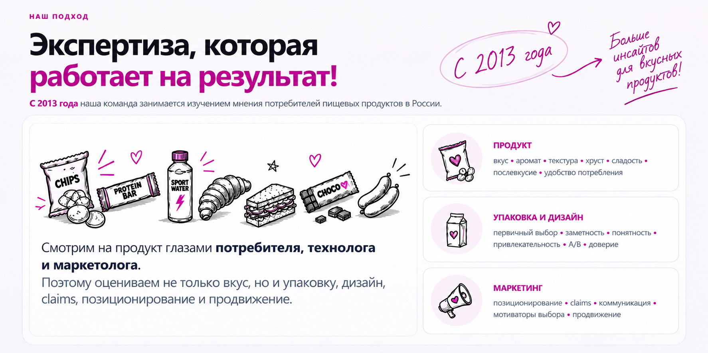
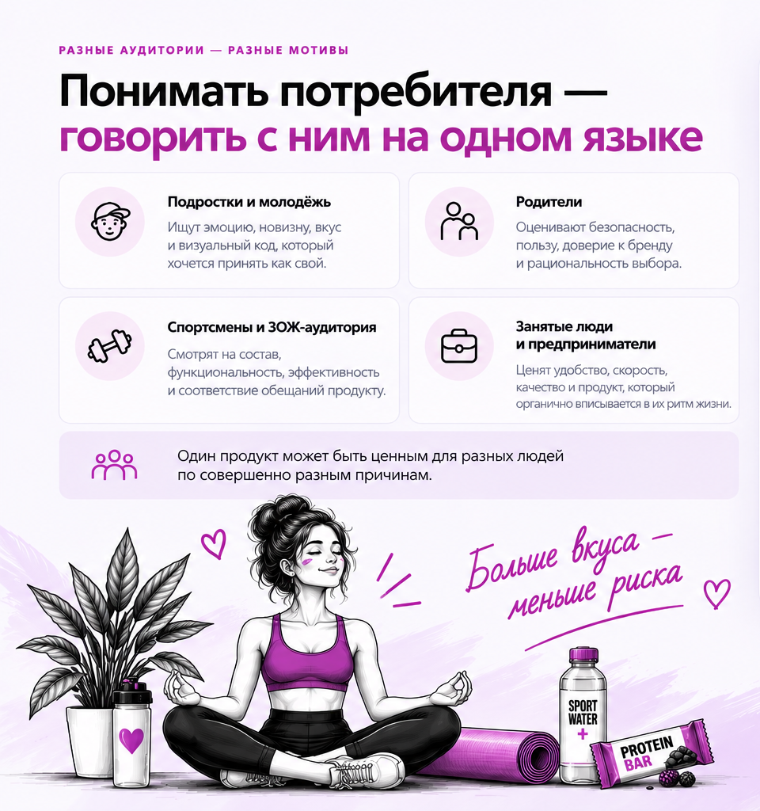

Реальная среда
Кофейни, встречи, перекус и обычный ритм жизни — не лаборатория, а настоящий контекст выбора.
Кофейни, встречи, перекус и обычный ритм жизни — не лаборатория, а настоящий контекст выбора.

Контролируем температуру, время, порцию и подачу непосредственно перед исследованием.

50–150 посетителей в день на каждой точке. Разные районы, ситуации потребления и аудитории.

Опросы, дегустации, фокус-группы, глубинные интервью и тестирование концепций.

При серии исследований снижается стоимость следующего этапа и ускоряется принятие решений.
Подбираем аудиторию под продукт и бизнес-вопрос, а не наоборот.
Состав, польза, калорийность, функциональность и баланс вкуса.
Регулярные тренировки и высокие требования к функциональности продукта.
Влияют на выбор и частоту покупки. Важно услышать именно их мотивацию.
Выбирают для себя и семьи, оценивая пользу, рациональность, вкус и эмоции.
Быстро реагирует на новинки, внешний вид, коммуникацию и новые форматы.
Люди в тренде, постоянно работающие и часто в стрессе. Часто по-другому смотрят на продукт.
Разные задачи — разные методы. Подбираем оптимальную комбинацию исследовательских инструментов, чтобы вы получили понятные и применимые инсайты.
Поймём, где ваш продукт выигрывает, а где уступает: вкус, аромат, текстура, упаковка, цена и восприятие.
Рекомендуем:Оценим, понравится ли новинка, кому именно, что доработать до запуска и как воспринимаются идея, вкус и упаковка.
Рекомендуем:Проверим, заметят ли потребители изменения и не ухудшится ли восприятие продукта.
Рекомендуем:Определим, какая из нескольких рецептур, вкусов или форматов имеет наибольший потенциал.
Рекомендуем:Оценим, что замечают первым, насколько понятен продукт, работают ли claims, дизайн и цена.
Рекомендуем:Найдём реальные причины: сам продукт, ожидания, упаковка, цена или коммуникация.
Рекомендуем:Помогаем находить уникальные идеи, которые действительно работают на рынке. Поймём, чего не хватает в категории, какие вкусы, форматы и сценарии потребления перспективны.
Исследование не гарантирует успех, но помогает заметить слабые места до того, как ошибка станет дорогой
Даже опытная команда не сможет точно предсказать, какой вкус полюбит подросток, что выберет спортсмен или чему доверится родитель.
Вкус может нравиться, но упаковка, claims или позиционирование не попадут в ожидания аудитории.
Новая рецептура или другой ингредиент могут изменить восприятие сильнее, чем кажется команде.
Когда оплачены производство, упаковка, листинг и продвижение, исправлять продукт заметно дороже.

Бизнес-вопрос, аудитория и критерии успеха
Инструменты и сценарий исследования
Площадка, аудитория и условия проведения
Опросы, тесты, дегустации или интервью
Данные, мотивы, барьеры и инсайты
Рекомендации и конкретные следующие шаги
Для конкретной продуктовой задачи и быстрого решения.
от 190 000 ₽Комплекс исследований для точных решений.
от 3 исследованийПостроение системы коммуникации с потребителями через регулярные диалоги.
индивидуальные условия
Подберём аудиторию и формат исследования. Ответим в течение 1 рабочего дня.